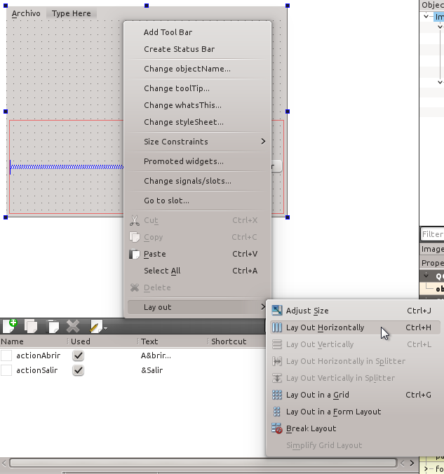

Layouts en Qt. Organización de controles
vie 15 febrero 2013 by Jesús TorresEl sistema de layouts de Qt proporcionar una manera sencilla de organizar los controles dentro de otros controles o ventanas, asegurando el mejor aprovechamiento del espacio disponible.
La idea es describir como deben organizarse los controles, dejando que después sean posicionados automáticamente por Qt en función del espacio disponible, incluso cuando este cambia por el redimensionado de la ventana o control que los contiene.
Introducción
Dentro de Qt Creator, en cualquier control, incluidas las ventanas principales y cuadros de diálogo, se puede seleccionar la organización de los controles que contiene mediante la opción Lay Out del menú contexual que se despliega al pulsar con el botón derecho del ratón.

Las opciones disponibles permiten organizar los controles en disposiciones tales como:
- Columnas en horizontal.
- Filas en vertical.
- En una rejilla bidimensional, permitiendo que un mismo control ocupe varias celdas.
- Como un formulario, con dos colunmas donde a la izquierda se sitúan las etiquetas descriptivas de los campos de la derecha.
Todas están comentadas en la documentación del proyecto sobre el Layout Management de Qt, donde además se muestran algunos ejemplos.
Anidamiento de layouts
Una organización de controles se puede anidar dentro de otra. Para eso existen unos controles especiales (uno por cada uno de los tipos de organización comentados anteriormente) cuya única función es contener otros controles para organizarlos de una manera concreta:
QHBoxLayout- Organiza los controles que contiene en columnas en horizontal.
QVBoxLayout- Organiza los controles que contiene en filas en vertical.
QGridLayout- Organiza los controles que contiene en una rejilla bidimensional.
QFormLayout- Organiza los controles que contienen como un formulario, con dos columnas.
Estos controles se pueden crear dentro de otro, de tal forma que su ubicación final dependerá de la organización configurada en el padre.
Espaciadores
Otro elemento clave en la organización de los controles son los espaciadores. Estos controles funcionan como muelles que separan los controles en horizontal o en vertical, según su orientación.
Por ejemplo, permiten mantener los controles lo más separados posible entre sí o pegarlos a los extremos de las ventanas, incluso aunque estas sean redimensionadas.
Tamaño de los controles
Cuando se añaden controles a un layout este procede de la siguiente manera:
- A todos los controles se les asigna una cantidad de espacio de acuerdo
con su
QWidget::sizePolicy()1 y suQWidget::sizeHint()2. - Si alguno de los controles tiene un factor de estiramiento3 con valor mayor que cero, entonces se les asigna espacio en proporción a dicho factor.
- Si alguno de los controles tiene un factor de estiramiento igual a cero,
entonces sólo recibirá más espacio si ningún otro control lo reclama. De todos
estos primero se asigna el espacio a los que tienen una propiedad
QWidget::sizePolicy()configurada como Expanding. - A cualquier control al que se le ha asignado menos espacio que su tamaño mínimo (o el tamaño mínimo aconsejado2, si no se ha especificado un tamaño mínimo concreto) se le asigna ese espacio que necesita.
- A cualquier control al que se le ha asignado más espacio que su tamaño máximo se le asigna ese espacio máximo.
El factor de estiramiento, que por lo general es cero, es un mecanismo para dar a unos controles más espacio en relación a otros. Si por ejemplo tenemos tres controles iguales en organización horizontal y sin factor de estiramiento, todos obtendrá el mismo espacio. Pero si aplicamos un factor de estiramiento su tamaño cambiará en proporción a la relación de dicho factor entre los distintos controles.
Otro elemento clave en la asignación del espacio es la política fijada en la
propiedad QWidget::sizePolicy(). Los valores posibles son:
- Fixed
- El tamaño del control viene determinado por
QWidget::sizeHint()y no puede cambiarse. - Minimum
- El tamaño del control indicado en
QWidget::sizeHint()es el mínimo posible. No puede encogerse pero si hacerse más grande, según sea necesario. - Maximum
- El tamaño del control indicado en
QWidget::sizeHint()es el máximo posible. No puede agrandarse pero si encogerse, según sea necesario. - Preferred
- El mejor tamaño posible es el indicado por
QWidget::sizeHint(), pero el control puede tanto agrandarse como encogerse, según sea necesario. - Expanding
- El mejor tamaño posible es el indicado por
QWidget::sizeHint()pero el control, de encogerse, seguiría siendo útil. Si sobra espacio, el control debe hacerse todo lo grande que sea posible. - MinimumExpanding
- El tamaño del control indicado en
QWidget::sizeHint()es el mínimo posible. No puede agrandarse pero si sobra espacio, el control debe hacerse todo lo grande que sea posible. - Ignored
- El tamaño indicado en
QWidget::sizeHint()debe ignorarse y el control debe hacerse todo lo grande que sea posible.
Referencias
-
QWidget::sizePolicy()es una propiedad de cada control donde se fija la política que desea que se siga para asignarle espacio. ↩ -
QWidget::sizeHint()es una propiedad de cada control donde se indica el espacio recomendado que debe ocupar. ↩ -
El factor de estiramiento del control se indica a través de su propiedad
QWidget::sizePolicy(). ↩